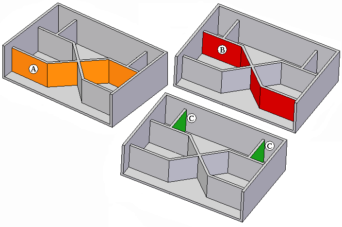
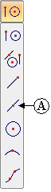
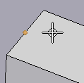
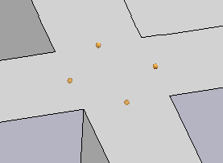
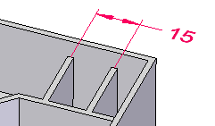

Editing a synchronous Web Network feature
Web Thickness (entire feature)
-
Select the Web Network feature in PathFinder, with QuickPick, or by selecting any face of the web network feature, and then click the All Feature Faces option.
-
Click the Web Network thickness handle (blue text).
-
In the value edit box, type the new thickness and press the Enter key.
Web Thickness (selected faces)
-
Select the target face on the Web Network feature.
Note:All web network segments in a chain (A, B) change when you select a single face of the chain for edit.
Only single web network segments (C) change when you select a face of the segment for edit.

-
Click the Web Network thickness handle (blue text).
-
In the value edit box, click the Selected Faces Only option.
-
In the value edit box, type the new thickness and press the Enter key.
Draft
-
Select the Web Network feature in PathFinder, with QuickPick, or by selecting any face of the web network feature, and then click the All Feature Faces option.
-
Click the Web Network draft angle handle (blue text).
-
In the value edit box, type the new draft angle and press the Enter key.
Dimensioning
You control a web network feature with dimensions. Dimension to the midpoint bind points.
To locate the midpoint bind point, select the midpoint option (A).


Possible midpoint bind points at a web network intersection.

-
Choose the Dimension Between command.
-
On the command bar, click the Midpoint option.
-
Select the midpoint bind points to place dimension.

Removing or adding web network sections
To remove a section of the web network, select the faces on each side of the web section to remove and press the Delete key.
To add a new section, create a new web network feature.